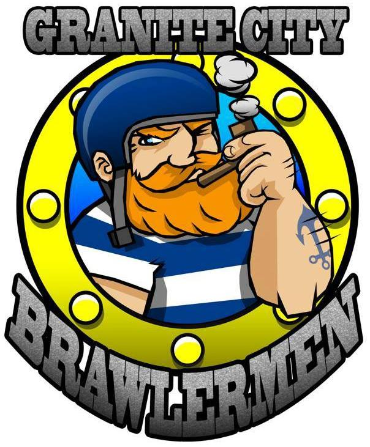

Granite City Brawlermen - A Roundup of 2014
How has recruitment for the Brawlermen gone in 2014? There has been quite a few new members, have you had to separate training?
We had 2 recruitment sessions in 2014 and are looking to hold our next one in the spring of 2015 (likely some time in April)
Despite a couple of our members moving away, our membership has almost doubled since our first intake all those months ago!
We train for 2 hours on a Sunday at the moment. Skaters from other leagues are welcome (pay to skate rates would apply), all we ask is that they contact us in advance so that our coaches can have the final say. For now, all levels of skater attend this session and we cover as much as we can either as a whole or in separate groups
 Granite City Brawlermen official logo
Aberdeen is quite far away from other men's leagues, how much opportunity have you had to scrimmage?
Some of our skaters have been to Dundee for their open scrims and we'd like to thank the folks at DRG for hosting and inviting us down. Some have also visited Grangemouth on a couple of occasions to take part in the open Power of Scotland training sessions and 2 took part in the Team Scotland bootcamp prior to the World Cup.
A few of us have been lucky enough to take part in coed scrims with Granite City Roller Girls. The girls know that scrimmaging opportunities for us are limited so they invited our mins passed skaters along. In return, we brought as many members as possible with us to support with NSO'ing etc. We can't thank GCRG enough for all their support so far. The experience gained by taking part in those sessions is invaluable to our progress as a league
Tell me about the Brawlermen's plans for 2015, so many people are eager to hear if you have any bouts planned
We don't have any bout plans for 2015 as our main aim is getting our current crop through their minimums and into scrimmages if possible.
Our main focus is getting our skaters through their minimum skills assessments and scrimmaging whenever/wherever they can. We also want to grow awareness of roller derby as a whole in the north east AND we will be helping with the organisation of the new Scottish Men's Roller Derby League with the overall aim being to eventually take part!
We're always looking for new ways to grow and progress so although you may not see us on track, we can guarantee that 2015 will be another year of positive growth and development for GCB.

{kind=link}